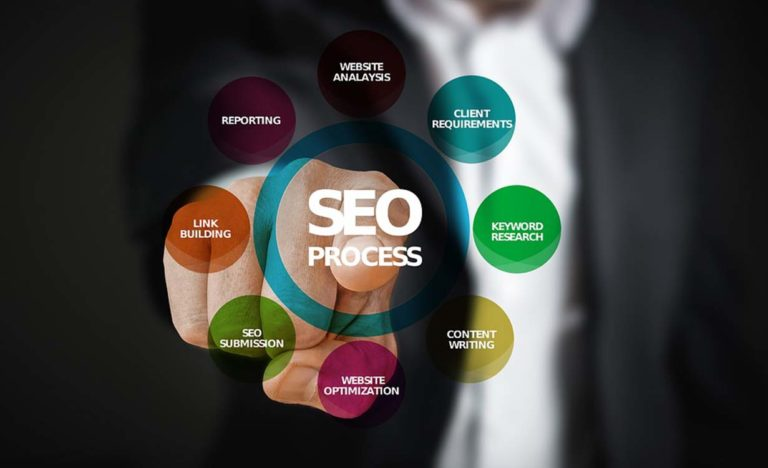

SEO - OPTIMIZACIJA WEB STRANICA
ŠTA PODRAZUMIJEVA OPTIMIZACIJA WEB-STRANICE ILI SEO?
Cilj svake stranice jeste da ima što više posjetilaca, bilo da je ti posjetioci pronalaze po imenu ili po ključnim riječima korištenim u okviru tekstova koji se pojavljuju na stranici. U tome glavnu ulogu igra optimizacija web-stranice ili SEO (Search Engine Optimization). SEO ili optimizacija web-stranice podrazumijeva poboljšanje pozicije web-stranice u rezultatima raznih Internet pretraživača, kao što su Google Chrome, Explorer, Bing itd. Najpopularniji pretraživač je svakako Google koji rangira web-stranice na osnovu različitih algoritama koji su uglavnom nepoznati široj javnosti.
Postoje dvije vrste optimizacije:
- Unutrašnja optimizacija (ON-SITE)
- Vanjska optimizacija (OFF-SITE)
Unutrašnja optimizacija web-stranice (on-site) se odnosi na radnje koje obavljamo na vlastitoj web-stranici kako bi se ista bolje rangirala na pretraživačima. Vanjska optimizacija web-stranice (off-site) se odnosi na radnje koje obavljamo izvan same web-stranice kako bismo utjecali na rangiranje stranice u pretraživačima. Vanjska optimizacija stranice je pokazatelj popularnosti stranice, a unutrašnja optimizacija je pokazatelj onoga čime se bavite. Za optimizaciju web-stranice i sadržaja koji se na njoj nalazi trebate krenuti od ključne riječi. Izbor ključne riječi je presudan za ono čime se bavite. Jednako je bitna i interakcija posjetilaca sa web-stranicom, odnosno koliko se vremenski posjetitelji zadrže na stranici, te koliko su tekstovi na web-stranici sadržajni. 
ELEMENTI OPTIMIZACIJE WEB-STRANICE
Neki od glavnih elemenata za optimizaciju web-stranice su:
- Naslovni tag (title tag)
- Meta opis (meta description)
- Istraživanje ključnih riječi
Naslovni tag
Title tag je ključan dio on-site optimizacije te je bitno da se u naslovu pojavljuje vaša ključna riječ za koju želite rangirati na Googlu. Naslov koji upišete pod title tag pojavit će se na Google stranici rezultata, na društvenim mrežama, u browser tab-u, a o njemu ovisi hoće li čitatelj kliknuti na vašu web stranicu ili neće. Ako je naslov nezanimljiv ili nerazumljiv te ne plijeni pažnju, malena je šansa da će netko odlučiti kliknuti na taj link.
Naslov je najbitnija stvar u marketingu jer o njemu ovisi koliko će čitatelja vaš sadržaj privući. Za Google je karakteristično da prikaže prvih 50-60 znakova vašeg title taga, a kako biste vidjeli kako će vaš naslov izgledati na Googlu, kliknite na ovaj
link.
Evo par stvari na koje morate paziti pri pisanju naslova:
- Nemojte prekoračiti duljinu naslova od 60 znakova
- Svaka stranica na vašem webu treba imati jedinstveni naslov
- Stavite bitne ključne riječi na početak naslova
- Nemojte pretjerati s ključnim riječima – neka naslov zvuči prirodno
Meta opis
Meta opis je kratak sažetak web stranice koji je bitan iz razloga što se prikazuje kao opis na Google stranici rezultata, društvenim mrežama itd. Meta description može biti bilo koje duljine, ali pretraživači uglavnom skraćuju sažetke duže od 160 znakova.
Iako meta opis ne utječe izravno na rangiranje stranice na pretraživači, iznimno je bitan jer ako je dobro napisan, zanimljiv i plijeni pažnju, više ljudi će odlučiti kliknuti i posjetiti vašu web stranicu. Pri pisanju meta opisa, potrudite se da bude zanimljiv, koristan i da njegova duljina ne prelazi 160 znakova.
Ključne riječi
Kako bi uopće mogli rangirati na Googlu, trebate ciljati neke ključne riječi koje vaši potencijalni kupci pretražuju na pretraživačima. Kako bi saznali koje ključne riječi vaši potencijalni kupci pretražuju, možete koristiti Google-ov Keyword Planner. Upišite ključne riječi relevantne za vašu tvrtke, te će vam alat sugerirati neke druge ključne riječi i dati podatke o broju mjesečnih pretraživanja svake pojedine fraze.
Još prije nekoliko godina bilo je moguće rangirati na Googlu tako da se jednostavno ključna riječ ponovi što više puta u tekstu, pa iako to bilo i na nekom nelogičnom mjestu. No danas je Google sofisticiraniji i takve stvari više ne prolaze. Ako ne želite da Google izbriše vašu web stranicu sa pretraživača, poštujte pravila i ključne riječi integrirajte prirodno u tekst, bez pretjerivanja.
Ključna riječ neka bude u naslovu članka te neka se prirodno pojavi još pokoji put u tekstu.
U sadržaj dodajte long tail ključne riječi s obzirom da su oni lakši za rangiranje te trebaju nadopunjavati primarne ključne riječi.
Da pojasnimo što su long tail ključne riječi:
| Ključna riječ | Broj pretraga |
|---|---|
| Namještaj | 5000 |
| Drveni namještaj | 400 |
| Namještaj za dnevni boravak | 30 |
Primarna ključna riječ bi bila primjerice “namještaj”, no takva ključna riječ je pregeneralna i rangirati na Googlu za to bez ogromnog budžeta i mjeseci rada bilo bi nemoguće. Zato se koriste long tail ključne riječi koje su specifičnije te je lakše rangirati za njih. Primjeri long tail ključnih riječi su “drveni namještaj”, “namještaj za dnevni boravak” itd.
BRZINA I NAVIGACIJA
Brzina učitavanja stranice
Brzina utiče na posječenost i popularnost stranice, a na brzinu učitavanja utiče veličina same stranice, odnosno veličina dokumenata koji se postavljaju na stranicu. Dokumenti koji se postavljaju na stranicu: slike, videozapisi, prezentacije i slično, trebaju biti maksimalno smanjeni bez gubitka na kvaliteti. Za to postoje razni eksterni alati, kao što su: Optimizilla, Tiny PNG, a više o optimizacija slika na ovom linku. Ako koristite WordPress postoje dodaci koje možete instalirati, kao što je Imagify, koji optimiziraju slike.
Navigacija na stranici
Navigacija je značajna toliko da se posjetioci mogu bolje snaći u sadržaju koji imate na stranici. Navigacija na web stranici treba povezati sve stranice kako bi im posjetitelji mogli što lakše pristupiti. Također, potrebno je da poveznice u meniju sadrže ključne riječi koje jasno opisuju sadržaj. Važno je da do linkova s bitnim ključnim riječima posjetitelj može doći kroz svega jedan ili dva klika.
Optimizacija za mobilne uređaje, odnosno prilagođenost prikazu na mobilnim uređajima i tabletima je nezaobilazan segment optimizacije stranice. Većina pretraga i posjeta stranici se obavljaju putem mobilnih uređaja, pa izgled i funkcionalnosti stranice trebate prilagoditi tom prikazu.
ALATI ZA OPTIMIZACIJU WEB-STRANICE
U optimizaciji web-stranice Vam mogu pomoći i određeni programi, kao što su: Google Analytics, Structured Data Testing Tool, SemRush, Keyword Explorer, Open Site Explorer, MozBar, RankActive, SEO PowerSuite, PageSpeed Insights, SimilarWeb, SERP-ov Rank Checker, i mnogi drugi. Neki od ovih programa su besplatni, a za druge možete iskoristiti besplatan probni period. U toku probnog perioda možete vidjeti da li Vam odgovara ono što taj program nudi. Jedni Vam nude pomoć pri izboru ključnih riječi, drugi pri procijeni brzine učitavanja web-stranice i drugih elemenata koji utiču na pozicioniranje web-stranice. Više o alatima koje možete koristiti pri optimizaciji web-stranice pročitajte na slijedećem linku.
Što je bolja pozicioniranost web-stranice u pretraživačima za određene ključne riječi to je veći broj posjeta. Što je veći broj posjeta, veća je mogućnost prodaje proizvoda i/ili usluga koje se nude na toj stranici. Potencijalni kupci Vas pronalaze ukucavanjem ključne riječi u pretraživač, a optimizacija web-stranice utiče na to da li ćete se pojaviti u vrhu (na prvoj stranici) ili ne. Na prvoj stranici se pojavi 10 web-stranica koje pretraživač rangira kao najbitnije za traženu ključnu riječ. Prema SERP statistikama 67% posjetilaca posjeti samo prvih 5 rezultata pretraživača. A čak 95% ukupnog web prometa se odvija na prvoj stranici pretraživača